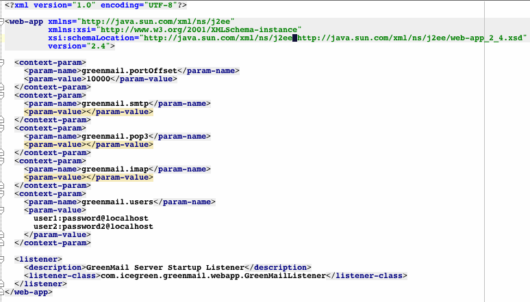

<table width="100%">
<tr><td>
<h2>GreenMail Webapp</h2>
<em>GreenMail Webapp</em> provides a lightweight Java web application.
<p>Like the
<a href="jboss-service.html">GreenMail JBoss Service</a>, the usage szenario is a
development or test environment where a real mail server is too much overhead.
The webapp is application server neutral - you should be able to use it on any JEE application server
running und Java 5.
</p>
With the GreenMail mail service each developer has its own local mail server sandbox -
so there's no danger for accidentally leaking test mails into the Internet.
<ul>
    <li><a href="#configure">Configurae</a></li>
    <li><a href="#deploy">Deploy</a></li>
</ul>

<h3><a name="deploy">Deploy the webapp</a></h3>
Simply deploy the webapp like any other Java web application.
<p>For Tomcat, just drop the webapp into <em>$CATALINA_HOME/webapps</em> directory.
   Alternatively, you can create a <em>$CATALINA_HOME/webapps/greenmail</em>, unpack the WAR
   here and <a href="#configure">configure</a> the GreenMail service.
</p>

<h3><a name="configure">Configuring the webapp</a></h3>
You can configure the active mail services and available users by editing <em>WEB-INF/web.xml</em>
in the WAR file and modifying the context params. A ServletContextListener starts and stops the GreenMail service when deploying/undeploying.
<p>Context Parameters
<ul>
  <li><em>greenmail.defaultHostname</em> - the mail server default hostname (defaults to <em>localhost</em>).
  <li><em>greenmail.portOffset</em> - added by default to the standard mail ports. Default is 10000 (so an activated SMTP service would start up on port 10025)</li>
  <li><em>greenmail.&lt;PROTOCOL NAME&gt;</em>  - starts a server for this mail protocol (using defaultHostname, port offset and default port).
    <p>Supported protocol names are
      <ul>
        <li><b>smtp</b></li>
        <li><b>smtps</b> (SMTP via SSL)</li>
        <li><b>pop3</b></li>
        <li><b>pop3s</b> (POP3 via SSL)</li>
        <li><b>imap</b></li>
        <li><b>imaps</b> (IMAP via SSL)</li>
      </ul>
    </p>
  </li>
  <li>greenmail.&lt;PROTOCOL NAME&gt;.host - optionally overwrites the default host name (localhost)</li>
  <li>greenmail.&lt;PROTOCOL NAME&gt;.port - optionally overwrites the default port and port offset for the given protocol</li>
  <li>greenmail.users - a whitespace/newline/comma separated list of mail users in the form of USER:PWD@DOMAIN.<li>
</ul>
<p>
Here's a code sample of a configured web.xml:
<p><a href="webapp/src/main/webapp/WEB-INF/web.xml" title="Click image for file"></a></p>
</p>

<br/><br/>
<br/><br/>
Have fun! We welcome any <a href="feedback.html">feedback</a>.
</td>
<td class="gads">
</td>
</tr>

</table>
